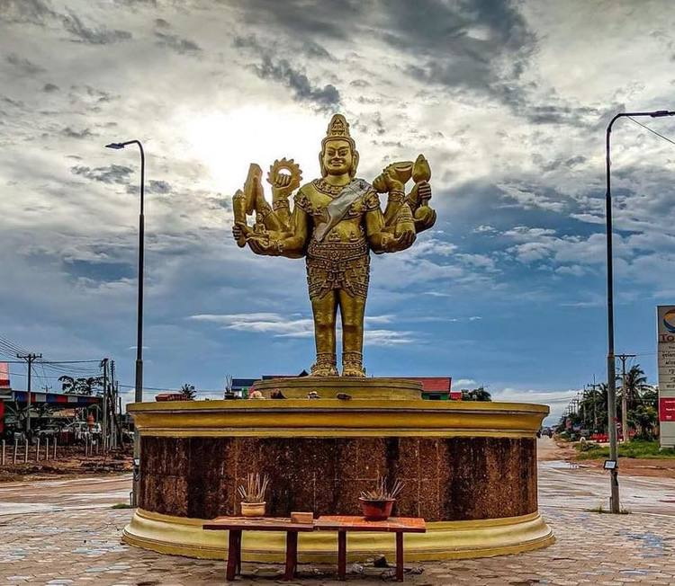

ការពិពណ៏នាអំពី ខេត្តនីមួយៗនៅក្នងប្រទេសកម្ពុជា
ទំព័រដើម
តាកែវ
ភ្នំពេញ
កែប
ព្រះសីហនុ
ស្វាយរៀង
កំពង់ធំ
បាត់ដំបង
ពោធ៏សាត់
សៀមរាប
រតនគីរី
មណ្ឌលគីរី
ក្រចេះ
ត្បូងឃ្មុំ
កំពង់ចាម
ព្រៃវែង
កណ្តាល
ឧត្តរមានជ័យ
កំពង់ឆ្នាំង
កំពង់ស្ពឺ
បន្ទាយមានជ័យ
កោះកុង
ប៉ៃលិន
កំពត
ស្ទឹងត្រែង
ព្រះវិហារ
ទំនាក់ទំនង
ខេត្តឧត្តរមានជ័យ

ព័ត៌មានសង្ខេបអំពីខេត្តឧត្តរមានជ័យ
> ខេត្តឧត្ដរមានជ័យ គឺជាខេត្តមួយស្ថិតនៅភាគពាយ័ព្យក្នុងប្រទេសកម្ពុជា ដែលមានព្រំប្រទល់ជាប់នឹងខេត្តបន្ទាយមានជ័យនៅខាងលិច ខេត្តសៀមរាបនៅខាងត្បូង និងខេត្តព្រះវិហារនៅខាងកើត ហើយមានព្រំដែននៅខាងជើងជាប់នឹងព្រំដែននឹងប្រទេសថៃ។ ទីរួមខេត្តគឺសំរោង។ ខេត្តនេះមានចម្ងាយប្រហែលជាង ៤៦២ គីឡូម៉ែត្រពីរាជធានីភ្នំពេញបើចេញដំណើរពីខេត្តឧត្តរមានជ័យមកតាមបណ្តោយផ្លូវជាតិលេខ៦៨ និងភ្ជាប់មកផ្លូវជាតិលេខ៦។ ខេត្តនេះមានទេសចរណ៏ធម្មជាតិ និងទេសចរណ៏វប្បធម៌។ ខេត្តនេះជាតំបន់ដែល មានប្រាសាទបុរាណជាច្រើនផងដែរ។ រីឯតំបន់ទេសចរណ៏ធម្មជាតិវិញ ទីនោះមានតំបន់អច្ឆរិយមួយគឺតំបន់រមណីយដ្ឋានដីដុះ ឬ រលួសធំដីដុះ ដែលមានទីតាំងនៅជាប់ជើងភ្នំដងរែក និងជាប់ផ្លូវក្រវ៉ាត់ព្រំដែន។
> ខេត្តឧត្តរមានជ័យស្ថិតនៅប៉ែកខាងជើងឈៀងខាងលិចនៃប្រទេសកម្ពុជា ដែលមានព្រំប្រទល់ៈ - ខាងជើងជាប់នឹងប្រទេសសៀម (ខ្មែរលើ) គឺ៖ ខេត្តបុរីរ៉ាំ,សុរិន្ទ និង ស៊ីសាកេត ដែលមានប្រវែង២២៤គ.ម ខ័ណ្ឌចែកដីយើងនិងថៃដោយភ្នំដងរ៉ែក (គ្មានដីវាលរាបទេជាមួយ ប្រទេសថៃ គឺសុទ្ធតែភ្នំដោយមានតែច្រក៣សម្រាប់ចេញចូលប៉ុណ្ណោះគឺ៖ ច្រកជុបគគី, ច្រកអូស្មាច់, ច្រកជាំសាង៉ាម ។ - ខាងត្បូងជាប់នឹងខេត្តសៀមរាប - ខាងកើតជាប់នឹងខេត្តព្រះវិហារ - ខាងលិចជាប់នឹងខេត្តបន្ទាយមានជ័យ ខេត្តឧត្តរមានជ័យមានចំងាយប្រមាណ ៤៣៩ គីឡូម៉ែត្រពីទីក្រុងភ្នំពេញ ដោយធ្វើដំណើរតាមផ្លូវជាតិលេខ៦អា និងកាត់តាមខេត្តកណ្តាល កំពង់ចាម និងបន្តដំណើរ តាមផ្លូវជាតិលេខ៦ ពីចំនុចបំបែកស្គន់កាត់តាមខេត្តកំពង់ធំ សៀមរាប ដល់ចំណុច ស្រុកក្រឡាញ់នៃខេត្តសៀមរាប មានផ្លូវបំបែកឆ្ពោះទៅទិសខាងជើងតាមផ្លូវលេខ ៦៨ ទៅកាន់ខេត្តឧត្តរមានជ័យ ។ ខេត្តមានផ្ទៃដីសរុប ៦ ១៥៨ គ.ម២។
> ខេត្ត ឧត្តរមានជ័យ មានចំនួន 4 ស្រុក និង 1 ក្រុង :
- ស្រុកអន្លង់វែង
- ស្រុកបន្ទាយអំពិល
- ស្រុកចុងកាល់
- ស្រុកត្រពាំងប្រាសាទ
- ក្រុងសំរោង